import numpy as np
from matplotlib import pyplot as plt
N = 101
epsilon = 0.2
# construct initial condition: 1 unit of heat at midpoint.
u0 = np.zeros((N, N))
u0[int(N/2), int(N/2)] = 1.0
u_test = u0.copy()
plt.imshow(u0)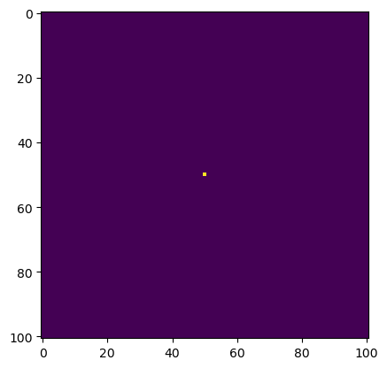
Aside from PIC 16A-level Python knowledge, this post expects you to be decently familiar with linear algebra and multivariable calculus. The formulas I use are taken from Professor Ko’s materials.
Many physical processes are modeled using differential equations, but because such equations involving limiting processes, actually visualizing them in their purest form is not possible. As such, we have to use some sort of approximation method in order to actually do so. Linear methods are the simplest, as you have probably seen in a calculus class.
When we attempt to approximate functions of multiple variables, however, it is often impractical to write out linear approximations using linear combinations of terms. It is, however, much easier to condense this information into a matrix and use matrix-vector multiplication in order to discretize the solution of a differential equation based on some initial values and a step-size (essentially, similar to a linear recurrence relation).
In our case, we want to approximate a solution to the two-dimensional heat equation, which models the amount of heat present in two-dimensional space as it diffuses over time. The differential equation is as follows:
\(\frac{\partial f(x,t)}{\partial t} = \frac{\partial^2f}{\partial x^2} + \frac{\partial^2 f}{\partial y^2}\)
That is, the rate at which the amount of heat present at a specific point in two-dimensional changes over time is related to the acceleration of this heat over a spatial dimension. It should not be surprising, therefore, that a discrete, linear approximation of a solution thus depends on having access to values of \(f\) at points neighboring a given point \((x,y)\):
\(u_{i,j}^{k+1} \approx u_{i,j}^{k} + \epsilon\left(u_{i-1,j}^{k}+u_{i+1,j}^{k}+u_{i,j-1}^{k}+u_{i,j+1}^{k} - 4u_{i,j}^{k}\right)\)
That is, at time \(k+1\), the amount of heat present at \((i,j)\) is approximately equal to the amount of heat present at the previous time plus a step size \(\epsilon\) (think about this as a very small change in time) multiplied by the amount of heat present in the four neighboring points minus four times the current amount of heat–that is, it depends on the amount of heat coming in from the point’s surroundings and also the amount of heat going out into the four neighboring directions.
One final thing is what’s known as the “boundary condition” which allows for heat to escape from the system. If \(f\) takes values over an \(N\times N\) grid, then we denote \(u_{-1,j}^k = u_{N,j}^k = u_{i,-1}^k = u_{i,N}^k = 0\) for all \(k\) (assuming we index from zero, which would mean that the indices \(-1\) and \(N\) are not found on our original grid).
Per Professor Ko’s requests, we will be using the following specifications for our model:
import numpy as np
from matplotlib import pyplot as plt
N = 101
epsilon = 0.2
# construct initial condition: 1 unit of heat at midpoint.
u0 = np.zeros((N, N))
u0[int(N/2), int(N/2)] = 1.0
u_test = u0.copy()
plt.imshow(u0)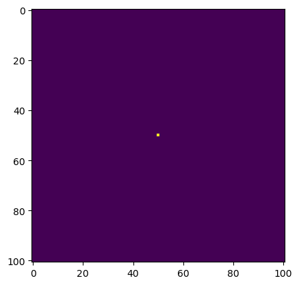
That is, a 101 by 101 grid, a step size of 0.2, and no heat at all except for one unit in the very middle. Based on this, we’re going to be investigating four different ways we can model the approximation presented earlier.
Returning to the previously shown approximation:
\(u_{i,j}^{k+1} \approx u_{i,j}^{k} + \epsilon\left(u_{i-1,j}^{k}+u_{i+1,j}^{k}+u_{i,j-1}^{k}+u_{i,j+1}^{k} - 4u_{i,j}^{k}\right)\)
Notice that at time \(k+1\), the heat present at a given point is nothing but the current heat plus a linear combination of neighboring points’ values. It is natural to wonder if we can thus take the current heat and add some sort of matrix multiplied to a vector of all of the current heat values to represent this process. We can, indeed, do this. Note, however, that we’ve been storing \(u_{i,j}\) in a matrix, but we now want to tinker with these values as a vector. This will require us to convert the matrix into a vector, which we can luckily do using the flatten method from numpy.
In particular, the matrix that we will be multiplying our heat vector by is of size \(N^2*N^2\) and will look something like this:
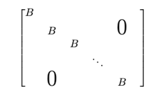
Where each \(B\) is a matrix that looks like the following:
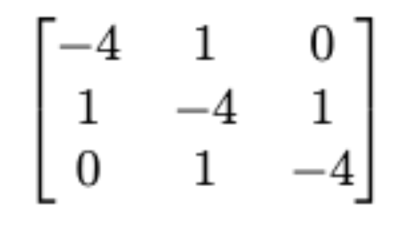
Professor Ko showed us a way to generate the matrix which encodes the linear transformation for our approximation. Here, I’ve encoded it in a function called get_A which, along with all the other functions for this post, is in heat_equation.py.
import inspect
import heat_equation
print(inspect.getsource(heat_equation.get_A))def get_A(N):
"""Prepares a linear approximation for advancing a two-dimensional heat
simulation in the form of a matrix
Args:
N: An integer denoting the side length of the square grid for the simulation
Returns:
A: An NxN matrix (numpy array) that encodes the approximation transformation
"""
n = N * N
diagonals = [-4 * np.ones(n), np.ones(n-1), np.ones(n-1), np.ones(n-N), np.ones(n-N)]
diagonals[1][(N-1)::N] = 0
diagonals[2][(N-1)::N] = 0
A = np.diag(diagonals[0]) + np.diag(diagonals[1], 1) + np.diag(diagonals[2], -1) + np.diag(diagonals[3], N) + np.diag(diagonals[4], -N)
return A
A = get_A(N)
print(A.shape,'\n')
print(A)(10201, 10201)
[[-4. 1. 0. ... 0. 0. 0.]
[ 1. -4. 1. ... 0. 0. 0.]
[ 0. 1. -4. ... 0. 0. 0.]
...
[ 0. 0. 0. ... -4. 1. 0.]
[ 0. 0. 0. ... 1. -4. 1.]
[ 0. 0. 0. ... 0. 1. -4.]]As we can see, our matrix has \(101\cdot101 = 10201\) rows/columns and the (block) diagonal shape as presented above. Now, let us implement our simulation using matrix multiplication. This first function, advance_time_matvecmul, was made by professor Ko.
print(inspect.getsource(heat_equation.advance_time_matvecmul))def advance_time_matvecmul(A,u, epsilon):
"""Advances the simulation by one timestep, via matrix-vector multiplication
Args:
A: An N x N numpy array used to operate on the heat grid.
u: N x N grid state at timestep k
epsilon: stability constant
Returns:
N x N Grid state at instant k+1
"""
N = u.shape[0]
u = u + epsilon * (A @ u.flatten()).reshape((N, N))
return u
Recall that @ is the matrix multiplication operator. Thus, the function takes the current grid u, and adds epsilon times the linear combination as shown above but in the form of matrix-vector multiplication, namely, our special matrix A multiplied by the grid u flattened into a one-dimensional array. This was why we needed A to be an extremely large matrix, by the way–if we were to put all of the entries in u into a single vector, it would indeed be \(101\cdot101 = 10201\) entries long.
Let’s, then, try visualizing the spread of the heat over time! We’ll make a function that helps visualize this for us. As specified by Professor Ko, we want to run the simulation for 2700 iterations and plot the system for every 300 iterations in a 3 by 3 grid. We’ll also make sure our function times how long it takes for our simulation to run (I use the default_timer from the timeit library).
from timeit import default_timer #To time
def visualize_plot(func,u0,A=None,direct_manip = True):
"""Plots the state of a heat diffusion simulation in a 3x3 grid
every 300 iterations up to iteration 2700.
Args:
func: The function used to conduct the simulation
u0: The matrix/array that contains the initial state of the system.
A: The matrix used to carry out the linear approximation for heat diffusion.
Note that this does not need to be specified for functions that directly
manipulate ``u0``
direct_manip: A boolean set by default to True which controls whether or not
our function uses a matrix multiplication or direct manipulation
technique
"""
fig, axs = plt.subplots(3, 3, figsize=(12, 12)) #Makes 3 by 3 grid
start = default_timer()
heat_matrix = u0.copy() #Copy of the original `u0`
for i in range(1,2701):
if direct_manip:
heat_matrix = func(heat_matrix,epsilon)
else:
heat_matrix = func(A,heat_matrix,epsilon) #Progresses the simulation by 1 step for
if i % 300 == 0:
axs[(i-300)//900, ((i-300)%900)//300].imshow(heat_matrix) #Places graph onto grid according to
#iteration number.
end = default_timer() #Finish timer
print(f"Time to execute: {end-start} seconds") #Print necessary timeAs you can see our function above takes in a simulation function of some sort (there will be others!) and loops through 2700 different iterations and graphs every 300 on a grid of matplotlib subplots. As for the coordinates of these plots, you can figure this out with some basic modular arithmetic (both are shifted by 300 to account for indexing from 0. The rows involve integer division by 900 while the columns are the remainder when divided by 300 within each group of 900).
Note that the input A corresponds to the matrix that we use to advance the simulation. The argument direct_manip will become relevant later in this post, but we essentially need it so that we know what sort of function we’re dealing with.
We also use the default_timer() function from the timeit package to see how long it takes for our code to run. Let’s give it a try.
u0 = u_test.copy()
visualize_plot(heat_equations.advance_time_matvecmul,u0,A,direct_manip = False)Time to execute: 40.459757999982685 seconds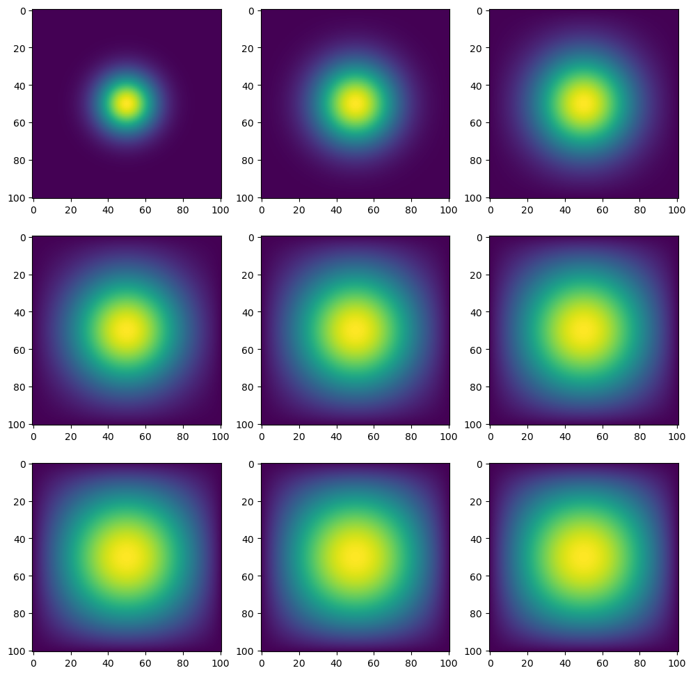
Well, this looks really cool! Unfortunately, it also takes a long time to run…40 seconds for something like this is way too long and amounts to nearly 14 milliseconds per iteration. Why does this take so long? Well, recall that we have to multiply a matrix by a vector. This involves conducting \(10201^2\) multiplications per iteration, which requires a large amount of computing power.
What can we do to fix this? Well, recall from when we first defined A that most of the elements are zero– in fact, if we recall, there are 7 non-zero entries in each 3-by-3 block matrix, which makes for about \(\frac{10201}{3}\cdot7\) non-zero entries out of the massive \(10201^2\) total, which is only .023%, more or less! This means that over 99% of our computations are wasted on multiplying numbers by zero (and we know what that evaluates to).
jaxThere is, however, a way we can make this more efficient. Matrices that are mostly zero are called sparse matrices, and the package jax comes with a module called sparse that speeds up matrix operations with sparse matrices. Read this link for the documentation:
https://jax.readthedocs.io/en/latest/jax.experimental.sparse.html
Let’s, then, implement essentially the same function but by using sparse matrices. But before we do that…
jnpjax is actually a machine learning package, but what makes it special is that it has been created in such a way as to optimize computationally intensive operations. As such, it has its own way of processing arrays which means that, by default, jax functions are not compatible with numpy arrays. However, there is a module within jax called jnp that essentially allows us to use jax arrays with almost the same functionalities as numpy arrays. This is why we will need to import both sparse from jax.experimental as well as jax.numpy in order to make our second function–advance_time_spmatvec–work. Also, jax arrays get converted into numpy arrays when interacting with matplotlib plots, so we’ll have no issue there as well.
from jax.experimental import sparse
import jax.numpy as jnp
import jax
print(inspect.getsource(heat_equation.advance_time_spmatvec))def advance_time_spmatvec(A, u, epsilon):
"""Advances the simulation by one timestep, via matrix-vector multiplication of sparsified BCOO matrices
Args:
A: an N x N sparsified array used to operate on the heat grid.
u: N x N grid state at timestep k
epsilon: stability constant
Returns:
N x N Grid state at instant k+1
"""
N = u.shape[0]
u= u + epsilon * (A @ jnp.ravel(u)).reshape((N, N))
return u
A few things to note:
A ‘normal’ array is referred to as a dense array, which we have to convert into a sparse one using the fromdense() function from sparse. In heat_equation, I implemented a function, get_sparse_A that allows us to create a sparse matrix that is numerically identical to A as in the previous case:
print(inspect.getsource(heat_equation.get_sparse_A))def get_sparse_A(N):
"""Prepares a linear approximation for advancing a two-dimensional heat
simulation in the form of a sparse `jnp`array.
Args:
N: An integer denoting the side length of the square grid for the simulation
Returns:
A: An NxN matrix (BCOO sparsified `jnp` array)
that encodes the approximation transformation
"""
A = get_A(N)
A_sp_matrix = sparse.BCOO.fromdense(A)
return A_sp_matrix
We rely on the get_A function that we saw earlier simply because the .fromdense method included in sparse.BCOO can take a numpy array and convert it to a sparce one.
A_sp_matrix = heat_equation.get_sparse_A(N)
print(A_sp_matrix)BCOO(float32[10201, 10201], nse=50601)
BCOO(float32[10, 10], nse=100)BCOO stands for “Batched coordinate.” The object that we create is created specifically to work with sparse matrix functions. Note that printing out the sparse matrix of type BCOO does not display the numbers of the matrix.
The other important thing to note is that we use the function jnp.ravel instead of np.flatten. I’m not sure why there isn’t a method called flatten for jax, but a simple Google search cleared this all up:
https://jax.readthedocs.io/en/latest/_autosummary/jax.numpy.ravel.html
u0 = u_test.copy()
visualize_plot(heat_equations.advance_time_spmatvec, u0,A_sp_matrix, direct_manip = False)Time to execute: 1.7815180409816094 seconds1.8 seconds. Much faster! Our timing is now only based on doing a number of multiplications proportional to \(N^2 = 10201\) rather than \(N^4 = N^2\cdot N^2=102^4 = 108243216\) calculations.
numpyWhile we’ve been able to model this as a linear transformation via matrix-vector-multiplication, that’s not entirely necessary for us to do. We could also directly manipulate the matrix entries in order to do so in numpy. In this way, we will avoid having to do many costly multiplications. We’ll call our function advance_time_numpy
My first time around, I tried manually doing this entry-by-entry using for loops and arrived at the following result:
def advance_time_numpy_naive(u, epsilon):
N = u.shape[0]
u_expanded = np.hstack((np.zeros(N+2).reshape([N+2,1]),np.hstack((np.vstack((np.vstack((np.zeros(N).reshape([1,N]),u)),np.zeros(N).reshape([1,N]))),np.zeros(N+2).reshape([N+2,1])))))
#Way too long
for i in range(u_expanded.shape[0]):
for j in range(u_expanded.shape[1]):
if ((i in range(1,N+1)) and (j in range(1,N+1))):
u_expanded[i,j] = u_expanded[i,j]+epsilon*(u_expanded[i-1,j]+u_expanded[i+1,j]+u_expanded[i,j-1]+u_expanded[i,j+1]-4*u_expanded[i,j])
#Cut off, but the above manually copies the approximation`
return u_expanded[1:N+1,1:N+1]u0 = u_test.copy()
visualize_plot(advance_time_roll_naive, u0,A)Time to execute: 23.30165791699983 seconds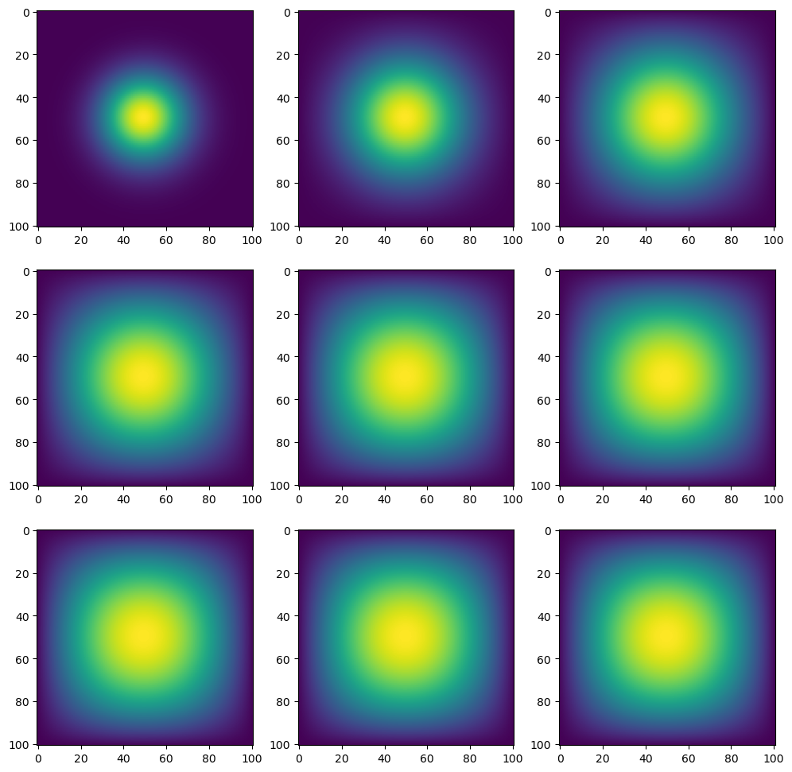
So, 23 seconds is better than the original matrix multiplication method, but this is still far too slow! Also, what on earth is going on with my code? Well, here’s an outline of what I wanted to do:
u_expanded) so that we can let the heat escapeThis, however, is quite slow since we go through every single entry. Also, the code for making the matrix surrounded by zeroes is really messy as well. After a while, though, I figured out that I could make major improvements:
There is a function in numpy called pad that can be used to surround a two-dimensional numpy array with rows/columns of a specified input (seriously, all I had to do was Google “numpy surround matrix” and find this StackOverflow post: https://stackoverflow.com/questions/35751306/python-how-to-pad-numpy-array-with-zeros)
We can use numpy’s vectorized matrix arithmetic functionalities to make things a lot smoother.
I’ll go over the syntax for pad when we look at my actual function, but the part that conceptually took the most work was figuring out how to update each entry without having to use a for loop.
Recall from PIC16A that if we use an arithmetic operation between two numpy arrays with the same dimensions, we essentially apply the operation element-wise:
A = np.array([[1,2],[3,4]])
B = np.array([[7,8],[9,10]])
print(A+B)
print(A*B) #This is the Hadamard (element-wise) product, NOT matrix multiplication![[ 8 10]
[12 14]]
[[ 7 16]
[27 40]]These operations go by quick, so it would be very nice if we could apply this onto u in our function. The problem, though, is that these operations only work on each involved matrix’s corresponding element–if we add four different matrices, for example, we add each matrix’s [0,0], [0,1], … and so on’s elements. But our discrete approximation references neighboring elements of a matrix. So, then, what are we going to do?
Recall that we essentially need to implement the following step: \(u_{i,j}^{k+1} \approx u_{i,j}^{k} + \epsilon\left(u_{i-1,j}^{k}+u_{i+1,j}^{k}+u_{i,j-1}^{k}+u_{i,j+1}^{k} - 4u_{i,j}^{k}\right)\)
So we need data from five different points: the point \((i,j)\), and the four points immediately above and below it. If we want to take advantage of vectorized operations, we need to make other matrices with the same dimensions but with the elements slightly shifted. That is, if we want to change u[1,1] by adding epsilon times u[0,1], for example, we need to make a new matrix u_shift such that u_shift[1,1] = u_[0,1]. But, how are we going to do this? I’ll show an example.
Consider a much more simplified version of our problem, where we only have heat values in a 3-by-3 matrix:
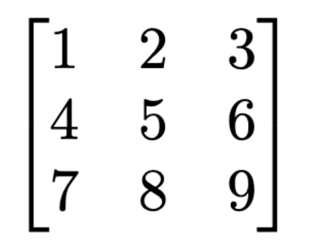
When we apply our border of zeroes onto it, it will look like this:
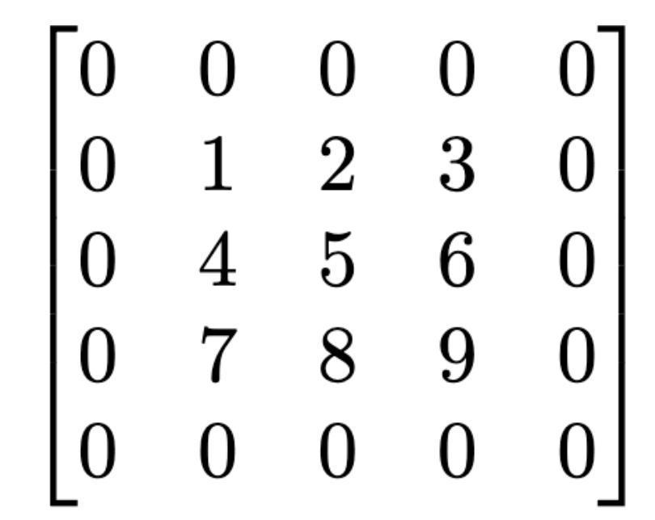
Now, let’s say we want the simulation to continue by one step. Let’s focus on the entry [1,1] indexing from 0, that is 5. In addition to this point itself, we need 4 other points: the ones directly above/below and next to the point:
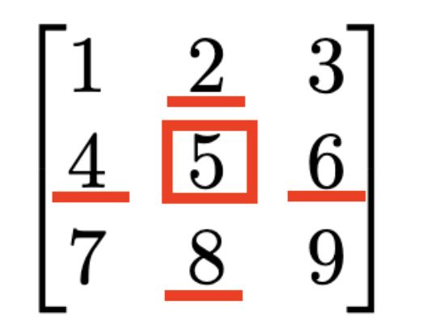
Our plan, then, will be to make a 3-by-3 matrix that has each of these entries (4,6, 2, and 8) out of the expanded matrix such that the entry [1,1] corresponds to the number we want. For instance, let’s start with 4. We need to make this the center of a 3 by 3 matrix, so imagine drawing a 3-by-3 grid around the point and crossing everything else out:
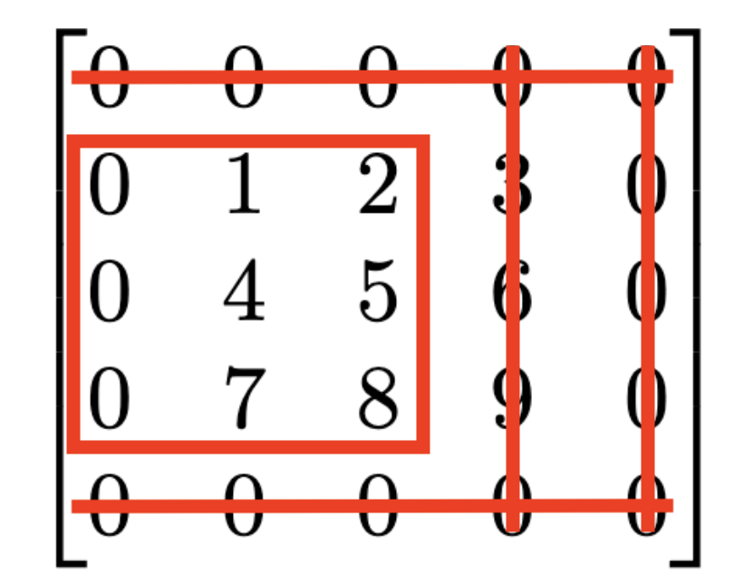
This is equivalent to taking the expanded matrix, removing the first and last row, and removing the last two columns. In other words, we would have 4 equal to u_expanded[1:-1, :-2] (remember subsetting form PIC16A?). Let’s see if this logic holds for another point. What if instead we wanted to do this for the number 7, which is [0,2] in our original matrix? We would need the 0 on the left to be the entry [0,2] of a 3x3 matrix–that is, the bottom left:
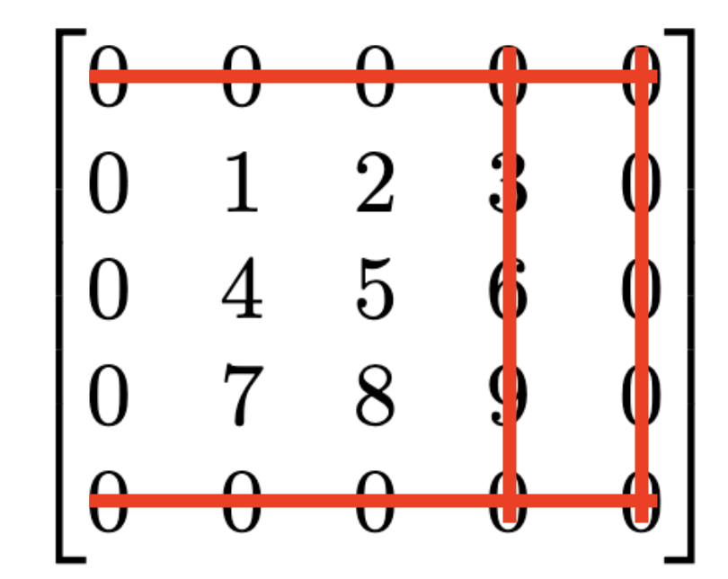
We do the exact same thing! Remove the top and bottom rows, and remove the left two columns. It looks like this logic will work for the entirety of our matrix. Let’s apply the same analogy to the point to the right of our point of interest, so going back to [1,1], we need to make a 3x3 subset of the expanded matrix where the 6 is in the center:
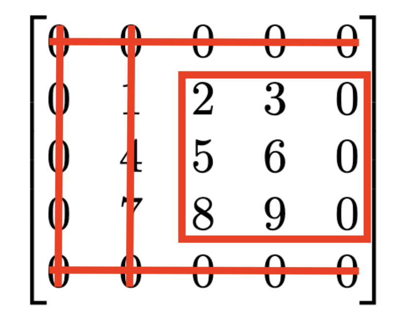
When it comes to the rows we get rid of, we do the same thing (omit first and last), but this time, we get rid of the first two columns from the left, so we should ideally have u_expanded[1:-1, 2:]. Below you can see the logic that applies for the entries above and below our point of interest:
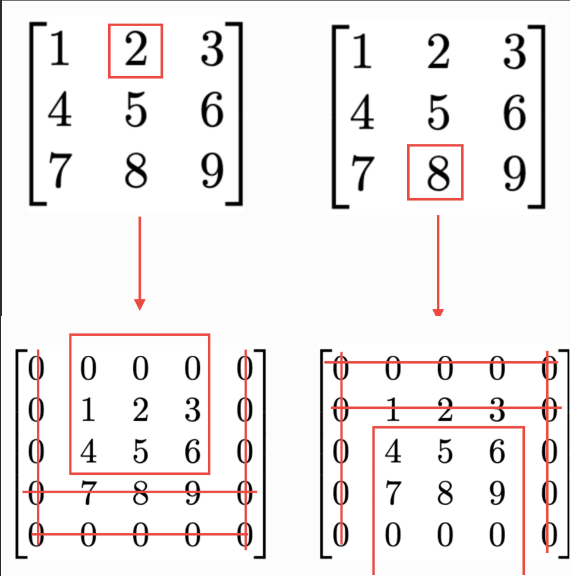
So, for getting the entry above, we should eliminate the first and final column as well as the bottom two rows. For the entry below, we also eliminate the first/final column but eliminate the first two rows. All in all, we have the following pattern:
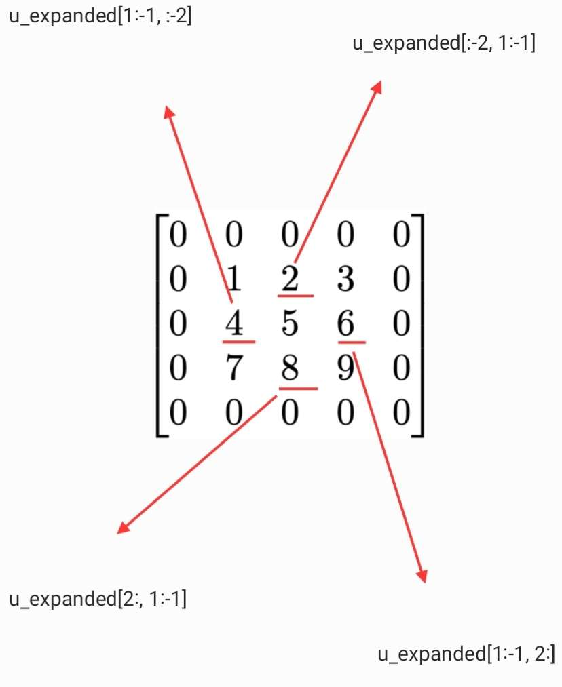
Now we’re ready to show the actual code:
print(inspect.getsource(heat_equation.advance_time_numpy))def advance_time_numpy(u, epsilon):
"""Advances the simulation by one timestep by directly manipulating the values of the heat grid.
Args:
u: N x N grid state at timestep k
epsilon: stability constant
Returns:
N x N Grid state at instant k+1
"""
u_expanded = np.pad(u, ((1,1),(1,1)), mode = 'constant', constant_values = 0)
u += epsilon * (u_expanded[:-2, 1:-1] + u_expanded[2:, 1:-1] + u_expanded[1:-1, :-2] + u_expanded[1:-1, 2:] - 4 * u)
return u
np.padLet’s start with np.pad. This will, as the name suggests, pad an existing numpy array with new rows/columns. The first argument is the array itself, and the second argument is a tuple of tuples. Each tuple is the number of rows/columns that we want to wrap around, either “before” (i.e., above/to the left) the array or “after” (i.e., below/to the right) the array. Since we just want all zeroes to be surrounding the matrix, we just have to fill in ones for the entries. We set mode equal to constant to make sure that we’re inputting the same value for all of the new entries, and we make that value 0 with the constant_values argument.
The explanation I gave previously was simply a set-up to make this part much easier to understand. First of all, recall from our discretization that we add the term multiplied by \(\epsilon\) to the current entry \(u_{i,j}^k\), which is why we use the += operator. We use this on u and not u_expanded becuase we don’t care about the “extra” entries that are only found in the latter but not in the former for the purposes of the return value. Of course, the values present in u_expanded are extremely important for the right-hand side of this operator. As shown in my diagram, the four subsets corresponding to u_expanded are, in the order shown in my function, the entries above, below, to the left, and to the right, of any given entry in u. Since, like we said earlier, matrix arithmetic operations are vectorized, this will apply to every possible entry in the matrix nearly at once! Finally, we subtract off 4*u as that represents the heat flowing out of the point. Then, we return the grid u.
Let’s see how fast our function is.
u0 = u_test.copy()
visualize_plot(heat_equations.advance_time_roll, u0, direct_manip = True)Time to execute: 0.11722458299482241 secondsjaxOh my goodness! That was really fast. Let’s see if we can make it even faster by using a feature found in jax called jit: just-in-time compilation. I am not an expert on how jit works, for that, you can read this link here: https://docs.w3cub.com/tensorflow~guide/performance/xla/index
Essentially, though, it is a method of conducting certain operations, especially those involving linear algebra (hence, jit works with something called XLA–accelerated linear algebra) that is different from the way it is normally implemented in Python. This can vasty speed up our computations. Since we saw that direct array manipulation was so fast with numpy, maybe we can make it even faster if we redefine essentially the same function but with jit instead.
To do this, we’ll just make a “jaxed” version of our advance_time_numpy function called advance_time_jax. Let’s look at the code:
print(inspect.getsource(heat_equation.advance_time_jax))@jax.jit
def advance_time_jax(u, epsilon):
"""Advances the simulation by one timestep by directly manipulating the values of the heat grid
using just-in-time compilation (jit) from `jax`.
Args:
u: N x N grid state at timestep k
epsilon: stability constant
Returns:
N x N Grid state at instant k+1
"""
u_expanded = jnp.pad(u, ((1,1),(1,1)), mode = 'constant', constant_values = 0)
u += epsilon * (u_expanded[:-2, 1:-1] + u_expanded[2:, 1:-1] + u_expanded[1:-1, :-2] + u_expanded[1:-1, 2:] - 4 * u)
return u
Not much has changed in the body of the function, except for the fact that we use jnp.pad instead of np. Before the function, however, we see that we have a decorator (remember from HTML?) which says @jax.jit. For our purposes, this just lets the compiler know that we want to use just-in-time compilation. We always put it before the function definition header.
u0 = u_test.copy()
visualize_plot(heat_equations.advance_time_jax, u0)Time to execute: 0.05747704196255654 seconds0.05 seconds! That’s incredibly quick. We were able to do this by firstly eliminating many unnecessary computations by directly manipulating our matrices, and furthermore, we leveraged just-in-time compilation through jax to make this process go so much faster.
In this post, we’ve looked at 4 methods of conducting a linear heat simulation on a 2-d surface that increased in efficiency. However, they were essentially two methods, but with one made faster thanks to the power of jax:
numpy)We started this post using the most naive method possible–manually multiplying a gigantic matrix on our system over and over again. While mathematically beautiful to understand a differential equation as a series of matrix-vector products, it was computationally incredibly expensive, taking nearly 40 seconds.
While it wasn’t difficult for me to implement, it would’ve been difficult to create the get_A function from scratch.
sparse)We were able to speed up this process so that it took less than two seconds by taking advantage of sparse matrices from jax. This was able to speed up our process a lot by eliminating many unnecessary calculations. It is important to recognize, however, that we were only able to leverage this method because the matrix A mostly had zeroes. Nonetheless, the increased efficiency was very helpful, and learning how to use jax for this purpose was very easy.
numpy)Taking advantage of vectorization to improve our process was very helpful and also less mathematically intensive in the sense that it was easy to wrap my head around the idea of subtracting heat from the center and adding that of the surroundings. However, figuring out the exact logic of what entries to add where did take some time–as can be seen in the fact that I had to draw some diagrams–. However, this method proved to be very quick, so I think it was definitely worth it. Furthermore, even though figuring out the correct commands in the function’s body was difficult, the code ended up being quite simple! I’m glad we did it this way, and its great that it’s a lot faster than even the method that uses sparse matrices. Anything involving multiplications takes up a lot of computing power, so it’s great that we were able to avoid most of them here.
jit)And, if that wasn’t good enough, slightly changing our function and taking advantage of just-in-time compilation to make Python run even faster made our function execute lightning fast–nearly 800 times faster than our very first one. Even though I’ve been only given a very simple introduction to jax as a whole, I was able to use it to help increase my code’s efficiency, so it wasn’t very difficult at all!